Září roku 36 našeho letopočtu. V Římské říši již 22 let vládne císař Tiberius, zatímco moc senátu upadá. Proslýchá se, že starý Tiberius nedávno vážně onemocněl. Ovšem málokdo ví o císaři něco jistě, neboť ten již několik let žije na ostrově Capri, kam za ním smí jen vyvolení.
Jisté je jedno, právě vrcholí Jupiterovy slavnosti a konzul říše Vitellius si do své přepychové vily Nonita, nacházející se poblíž velkolepého Říma, pozval řadu významných hostů - ctihodné senátory s rodinami, mocné místodržící i statečné generály, také řadu talentovaných umělců a význačných myslitelů. Dále se očekává příjezd skupinky nejvyhlášenějších kurtizán, a dokonce se šušká o delegaci až z dalekého Egypta. Jupiterovy slavnosti povede vážený Flamen Dialis společně s bohabojnými vestálkami.
Obyvatelé vily v čele s konzulem Vitelliem a jeho ženou Agrippinou již nyní chystají vše potřebné pro uvítání hostů. Naštěstí mají k dispozici spoustu otroků.
Ludi Romani je konverzační obsahová hra s předpřipravenými postavami pro 41 hráčů s dramatickými prvky a atmosférou antického Říma. Čekají vás politická vyjednávání, zákulisní intriky, vytváření spojenectví a jejich zrady, podivné lásky a zakázané vášně, ale zejména bujaré oslavy včetně gladiátorských zápasů, divadelních představení, přednesu básní či obětování bohům. Zkrátka a dobře, dáme vám ochutnat Řím.
Hra je inspirována reálnými historickými událostmi a postavami z roku 36 n.l., nicméně není věrnou historickou rekonstrukcí. Ve hře se nachází i prvky z římské mytologie.
Larp je určen pouze pro osoby starší osmnácti let. Běžnou součástí hry bude herní sex a hra se bude dotýkat intimní roviny hráčů, proto doporučujeme účast osobám schopným komunikovat nastavení hranic s ostatními hráči. Bude se podávat alkohol ve formě vína, nicméně reálná opilost hráčů není žádoucí a organizátoři si vyhrazují právo vyloučit ze hry opilé osoby. Nejedná se o fyzicky náročnou hru, avšak řada postav může očekávat psychicky náročné scény. Triggery budeme řešit individuálně v rámci dotazníků rozesílaných před hrou.
V roce 2027 chystáme celkem dva běhy v termínech 17.-20. 6. 2027 a 24.-27. 6. 2027. Příjezd hráčů do lokality je vždy ve čtvrtek mezi 16 a 18 hod., poté budou následovat herní workshopy, samotná hra začne v pátek v čase oběda a skončí v sobotu později večer.
Hra se bude odehrávat na chalupě Volyňka v Jižních Čechách nedaleko Strakonic.
Registraci na hru spouštíme 1. 12. 2027. Registrace poběží čtrnáct dní. Odkaz na registrační formulář bude zde.
Cena larpu je 4 500 Kč. Účastnický poplatek bude zapotřebí uhradit do 30. 1. 2027. V ceně larpu jsou rekvizity a kostým s výjimkou obuvi (více informací v sekci kostým), ubytování a jídlo od čtvrteční večeře po nedělní snídani.
S dalšími dotazy se můžete obrátit na email: ludiromanilarp@gmail.com nebo facebookové stránky.
Většinu kostýmu obdrží hráči na místě, s sebou si prosím vezměte spodní oblečení v tělové barvě a nerušivé sandály v hnědé, černé, bílé, u postav ze skupiny patricijů i ve zlaté barvě. Pokud byste si na hru přáli přivézt vlastní kostým, konzultujte tuto možnost prosím s námi na výše uvedených kontaktech.
Maximální hranicí intimity na hře bude francouzský polibek a jemné doteky mimo intimní partie. Do této hranice si hráči nastaví horní limit intimity mezi sebou na workshopech. V rámci herních orgií pak hráči své limity intimity viditelně nastaví dle zvolené barvy škrabošek, které budou na hře k dispozici.
V průběhu celé hry bude platit pravidlo Rudé stop a Uber, které si vysvětlíme v rámci předherních workshopů.
Herní sex bude běžnou součástí hry, proto doporučujeme účast osobám schopným komunikovat nastavení hranic s ostatními hráči.
Orgie představovaly v antickém Římě společenskou slavnost, nikoli jen intimní zábavu. Senátoři, patricijové i vzdálení hosté se scházeli v nádherně zdobených atriích, aby si užili hudbu, víno a rozmarné hry - podobně, jako dnes navštěvujeme divadlo nebo kino. Šlo o oslavu kultury, pohostinosti a radosti ze života, ne o tabuizovanou událost.
Na larpu Ludi Romani navazujeme na tuto tradici spíše atmosférou než otevřenou erotikou. Při příchodu na orgie si hráč vybere škrabošku, která dle barvy symbolizuje jeho horní hranici intimity. Od mírného pohlazení po zádech, až po líbání a jemné dotyky po těle s výjimkou intimních partií.
Klíčovou roli hraje výzdoba prostoru, kvalitní hudba a chutné občerstvení, aby pozvaní hosté okusili zážitek na vysoké úrovni.
Na hře se bude v omezené míře podávat alkohol ve formě vína, nicméně reálná opilost hráčů není žádoucí a organizátoři si vyhrazují právo vyloučit ze hry opilé osoby. K dispozici budou i nealkoholické varianty.
Ve hře budete moct hrát postavy z následujících skupin:
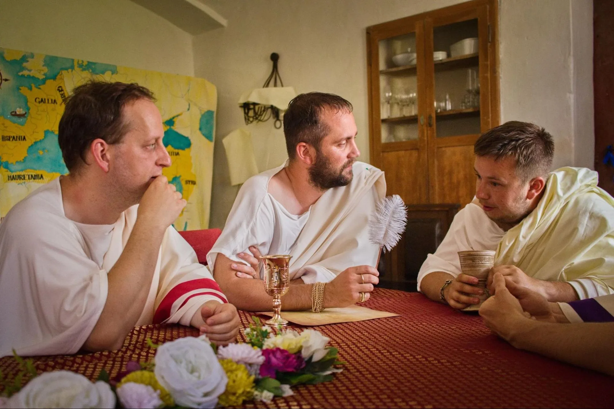
Jedná se o skutečně nejmocnější muže říše - ti, kteří drží v rukou politickou či vojenskou moc. V rámci této skupiny nebude hlasovací právo náležet všem, ale všichni budou disponovat vlivem, který, pokud bude dobře využit, může být rozhodující. Každý zde usiluje o větší moc, postavení a čest pro svůj rod. Vzájemné vztahy jsou křehké a nejisté. V zákulisí probíhají tajná vyjednávání, vznikají nečekaná spojenectví, uzavírají se dohody – a také se plánují zrady. Ovlivní někdo z nich průběh dějin, a stane se jeho jméno nesmrtelným?
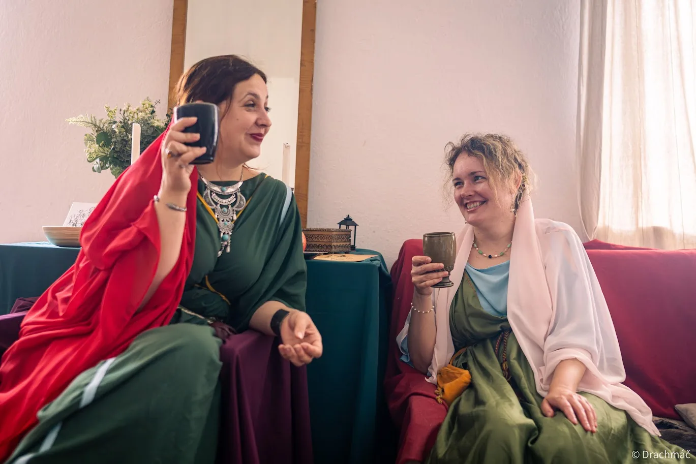
Sdílejí nelehký úděl mocných žen ve stínu říše. Soutěží mezi sebou o prestiž, krásu, obdiv i o to, kdo stojí po boku nejvlivnějšího muže. Jsou vždy vidět – oslnivé, hrdé a elegantní. Jsou ozdobou svých rodů, ale i tichými hybatelkami politického dění. Dobře totiž vědí, jak ovlivnit rozhodnutí svých mužů, a neštítí se využít svůj důvtip, šarm ani společenské postavení. Mají bystrý rozum, paměť ostrou jako dýka a přirozený smysl pro intriky. Dobře vědí, že informace znamenají moc, a žádný muž se nevyhne otázce, co se projednávalo za zavřenými dveřmi.
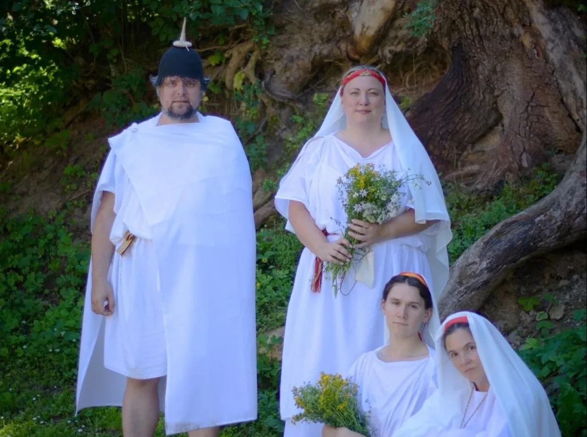
Do vily dorazil ctihodný Flamen Dialis spolu s vestálkami, aby dohlédli na přípravy a řádný průběh slavností. Jejich úkolem bude zajištění posvátných rituálů, obětí a nepřetržitého udržování posvátného ohně, který symbolizuje ochranu a trvání Říma.Uvnitř posvátného kruhu však panuje napětí a neklid. Objevují se znepokojivé události, které narušují běžný chod věcí a vyžadují vnitřní řešení – daleko od očí veřejnosti.
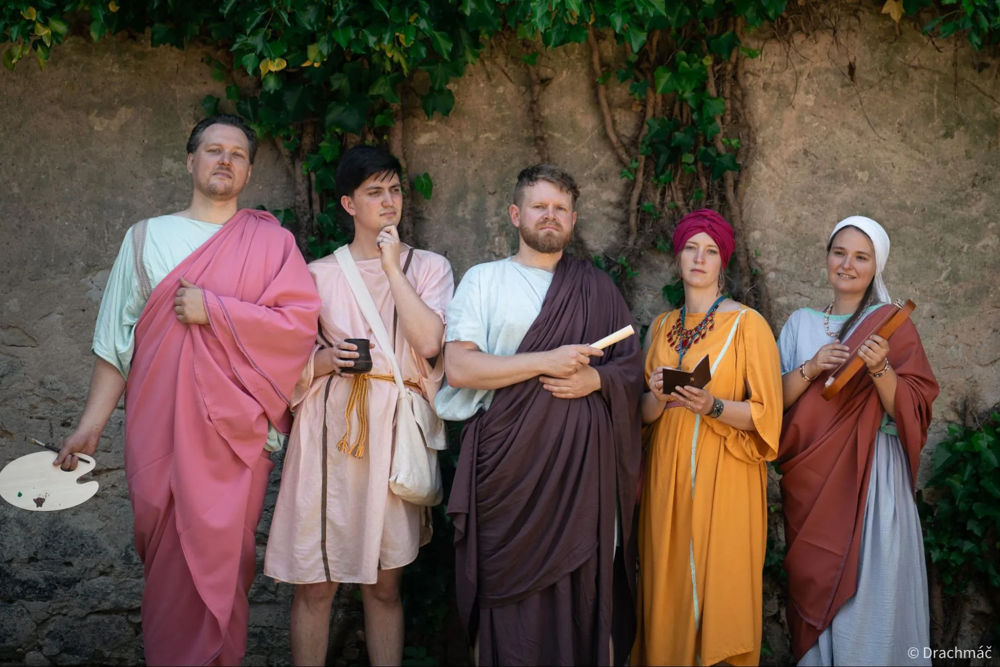
Tvoří pestrou a nesourodou skupinu. Mnozí se navzájem sotva znají, ale spojuje je společný rys – nemají sice přímý vliv na politické dění, přesto jejich přítomnost však nelze přehlédnout. Jsou to lidé nadaní – umělci, myslitelé, řečníci. Ve společnosti římské elity mají své zvláštní místo. Nevládnou mečem ani zákony, ale inspirací. A proto jsou na těchto slavnostech vítaní. Věří, že umění, věda a slova jsou dary Bohů – a váží si navzájem svého umu. Slavnosti jsou pro ně příležitostí, jak tento um proměnit buď ve slávu, či v užitek.
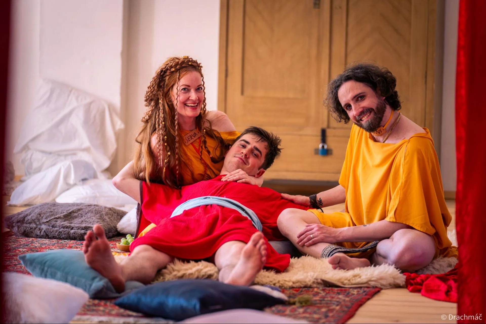
Tato skupina byla povolána na slavnosti, aby poskytovala potěšení těm, kteří si to mohou dovolit – nebo těm, u nichž se to vyplatí. Jejich přítomnost na slavnostech není náhodná; jsou zde proto, aby naplnily tajné touhy a potřeby římské smetánky. Každá z kurtizán má svůj příběh, své motivace, sny i bolesti. Některé jsou ve službě dobrovolně – vidí v ní cestu k bohatství, bezpečí, společenskému vzestupu nebo dobrodružství. Jiné neměly na výběr. Všechny však dobře rozumějí tomu, jak funguje římská společnost: kdo ovládá touhu, může ovlivňovat i rozhodování. Za jejich úsměvy se často skrývá strategické myšlení. Některé z nich poslouchají víc, než se očekává. Jiné se ptají víc, než by měly. A všechny vědí, že i v nejintimnějších chvílích se mohou odehrávat věci, které mají dosah daleko za zdmi ložnic.
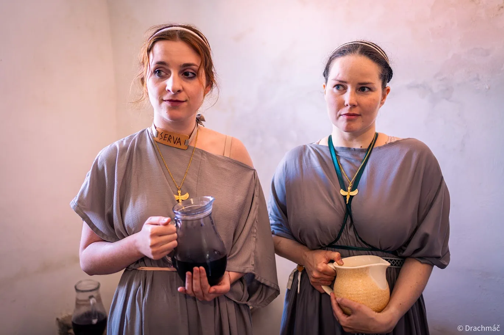
Jsou majetkem svých pánů, kteří rozhodují o každé stránce jejich života. Každý rozkaz musí být splněn bez odmluvy. Každé zaváhání může být potrestáno. Urážky, posměšky, ponižování – to vše je součástí každodenní reality, kterou musí tiše snášet. Někteří v sobě udržují jiskru touhy po svobodě – sen o životě mimo zdi služebních prostor, mimo řetězy povinností. Sní o dni, kdy nebudou nikomu patřit, kdy jejich hlas bude mít váhu. Jiní se už snít odnaučili. Přizpůsobili se, našli způsob, jak přežít. Někteří dokonce věří, že mají štěstí – jejich pán je spravedlivý, nebo alespoň není příliš krutý. Ve světě, kde jejich život nemá hodnotu, hledají útěchu tam, kde mohou. V tichých rozhovorech mezi sebou, v drobných gestech lidskosti, v pohlazení, v úsměvu či v modlitbě.
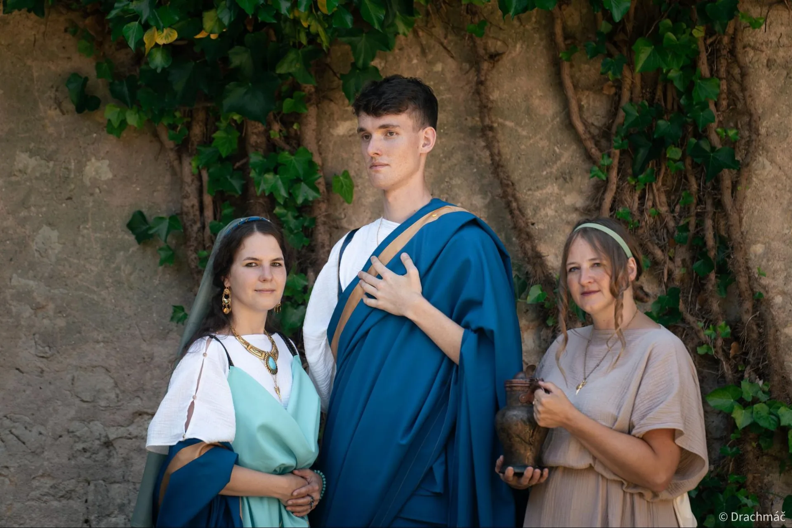
Povídá se, že do vily byla pozvaná významná návštěva až z dalekého Egypta. Tato delegace v sobě nese víc než jen orientální exotiku. Přináší novou rovnováhu sil, otevřenou otázku náboženské svobody a především nečekané osobní příběhy, které mohou výrazně ovlivnit další vývoj dění až v samotném srdci Říma.
Máme v zásobě ještě několik postav, které nelze přímo přiřadit do žádné z výše uvedených skupin, proto počítejte s tím, že Vám mohou být nabídnuty i nějaké postavy mimo výše uvedené kategorie.
Registraci na hru spouštíme 1. 12. 2027. Registrace poběží čtrnáct dní.
Přihlašovací formulářZa zdokumentování prvního běhu naší hry děkujeme skvělým fotografům Jakubu Drachmáči Řezníčkovi a Kateřině Hovězákové.
Hra Ludi Romani je zasazena do Římské říše roku 36 n. l., tedy do období vrcholné vlády císaře Tiberia. Vychází z reálného historického kontextu, inspiruje se tehdejší společností, strukturou moci, náboženstvím i kulturními zvyklostmi. Zároveň se však nejedná o historickou rekonstrukci, nýbrž o dramatickou fikci, která si v některých ohledech bere volnost kvůli intenzivnějšímu hernímu zážitku.
Hra rovněž obsahuje i mytologické motivy – kromě realistické politiky a společenských konfliktů se mohou objevit i symbolické nebo snové momenty, které se dotýkají římského náboženství, víry a světa bohů. Tyto prvky jsou součástí zážitku a atmosféry, nikoli pokusem o doslovné ztvárnění antické spirituality.
Naším cílem není přesná rekonstrukce historie, ale autentická atmosféra a možnost ponořit se do světa, který bude působit jako Řím – a zároveň nabídne hluboký osobní zážitek. Pokud budete mít pocit, že něco „neodpovídá“, je to pravděpodobně záměr, který slouží hratelnosti, plynulosti nebo emoční hloubce hry.
Marek je ctihodným občanem, kterému v české kotlině plné barbarů chyběl civilizovaný antický larp.
Po vzoru nesmrtelného Pluta nemá strach z temnoty. Naopak, lákají ho příběhy, které vychází z nitra jeho stínu. Přitahuje ho vše neznámé, tajemné a zdánlivě nedosažitelné.
Stejně jako dávného vyzyvatele Říma, i jeho fascinují alpské průsmyky, a baví jej posouvání vlastních limitů.
„Per aspera ad astra.“
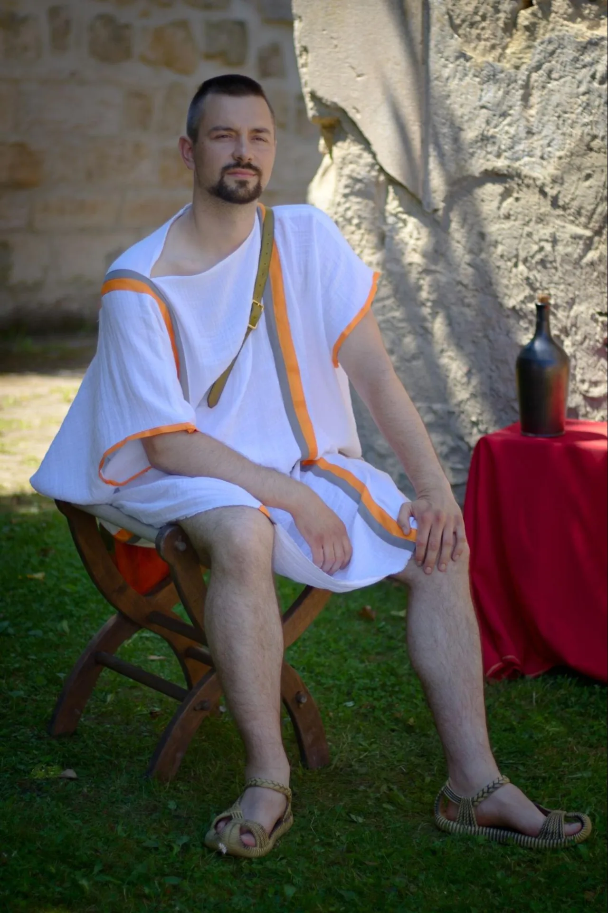
Tento Říman, se jmenuje Ondřej a tak nějak vždy čerpal radost z příběhů. Poté, co objevil existenci událostí, díky kterým si může příběhy prožít na vlastní kůži se do nich ponořil naplno. Během několika let si toho vyzkoušel spoustu, od otroků přes běžné občany, až po epické hrdiny. Nyní se rozhodl, že již nechce příběhy pouze prožívat ale i tvořit.
Mimo jiné po vzoru Apolla rád střílí z luku či zkouší jiné sporty nebo tráví čas nad partičkou šachů a jiných deskových her.
„Acta non verba“
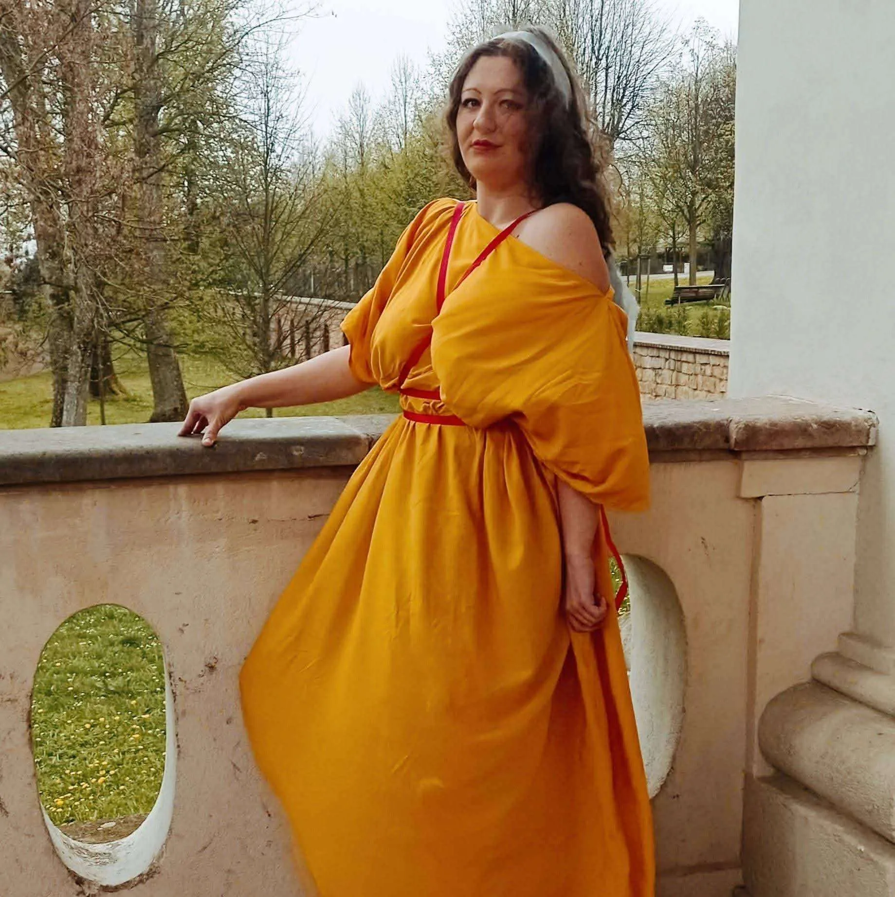
Kristýna se vždy vyžívala v nahlížení za roh reality a v pohružování se do přítomného okamžiku natolik, až z něj mohlo vyjít i něco neskutečného. Rychle se proto našla ve světě larpu a po asi dvou letech hraní se střemhlav vrhla do tvorby.
Stejně jako římští občané se domnívá, že duševní a tělesné rozkoše se rozhodně nemusí vylučovat, ale naopak se vzájemně podporují. K zanícené debatě o otázkách etiky a smyslu žití pro ni tak vždy patřilo i lahodné víno, dobré jídlo a veselá společnost.
„Carpe diem“
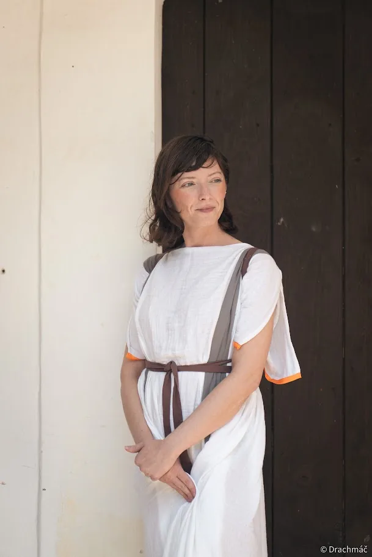
Adéla hledá neustále inspiraci v neznámém a je přesvědčena, že pouze v neprobádaných prostorách mysli a duše lze objevit skutečnou svobodu. Ráda hledá nové výzvy, které jí umožňují překračovat hranice konvencí. Fascinují ji kontrasty a příběhy, které dokáží spojit to, co zdánlivě spojit nelze - světlo a stín, klid a chaos, staré a nové.
Její vzorem je Minerva, bohyně moudrosti, umění, řemesel i strategického myšlení, coby ochránkyně spojování protikladů, bohyně neustálého vývoje.
„Ex oppositis, unitas“
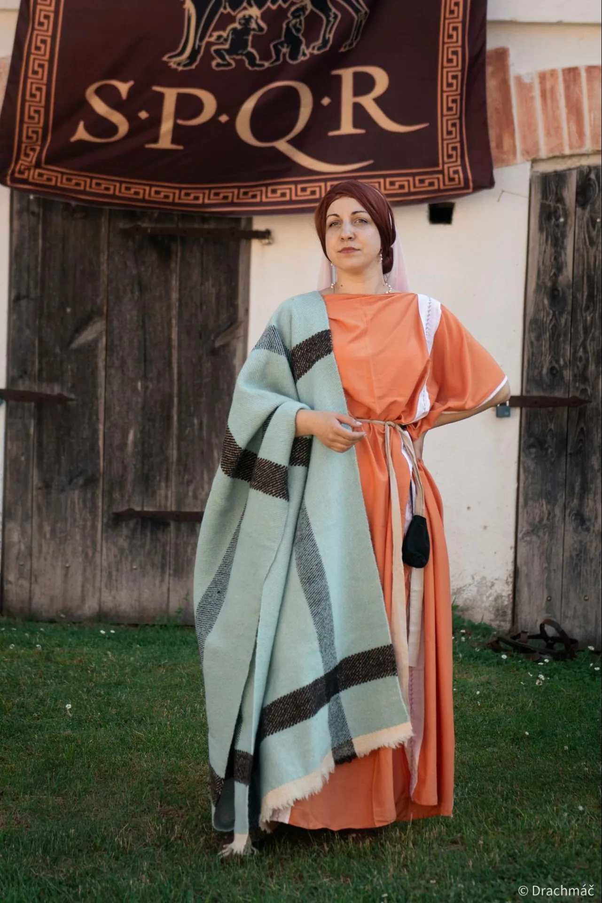
Anča je hlavní kostymérkou Ludi Romani a tou, díky níž Římané nezůstanou jen jmény na papíře. Navrhla podobu kostýmů a dohlíží na to, aby se senátoři, vestálky, kurtizány i otroci mohli alespoň na pár dní obléknout do světa antického Říma.
Pod ochranou Minervy, patronky řemesel a umění, mění látky, střihy a nápady v oděvy hodné Jupiterových slavností.
„Ars longa, vita brevis.“
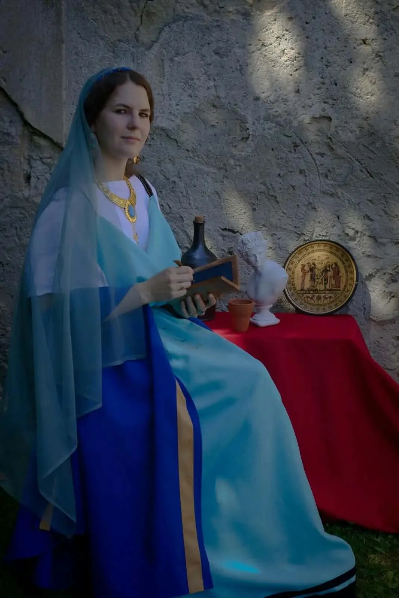
Verča je kostymérkou Ludi Romani a společně s Ančou dala římským postavám jejich skutečnou tvář. Tam, kde scénář končí na papíře, přichází na řadu látka, jehla, nit a spousta práce, aby se z hráčů mohli stát obyvatelé Říma.
Pod ochranou egyptské bohyně Isis dokáže proměnit kus látky v oděv hodný Říma. A dobře ví, že i ve věčném městě šaty dělají člověka.
„Ars est celare artem.“
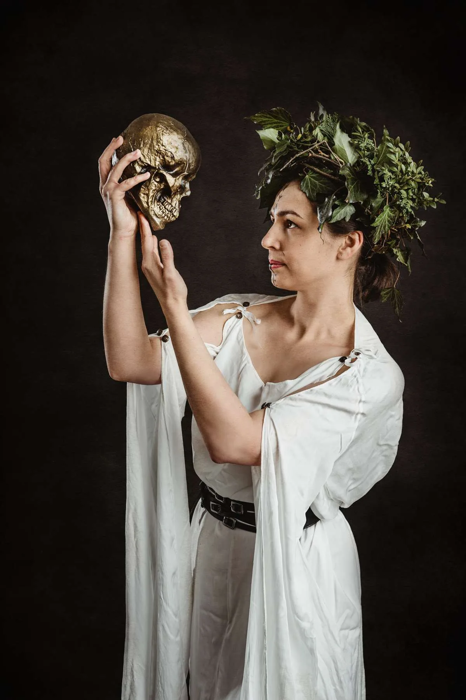
Tato občanka vyměnila život plný ruchu a aktivity za “poklidný” život matky. A přesto se stále snaží vracet do rušného světa, kde příběhy čekají za každým rohem.
Příběhy, jejich předávání a prožívání považuje za neodmyslitelnou část lidství. Nezáleží tolik na tom, zda jsou pravdivé. Důležité je, že v nás zůstávají a že jejich prostřednictvím se můžeme na okamžik ocitnout v kůži a získat perspektivu někoho jiného.
Místo bohů souzní spíše s lidmi. Velmi se ji líbí Senecovo pojetí stoicismu, přestože od klidu a rozvahy stoiků by jen stěží mohla být vzdálenější. Naopak přiznává, že by z jejich moudrosti nejspíš mohla nejednou těžit.
“Quam bene vivas refert, non quam diu.”
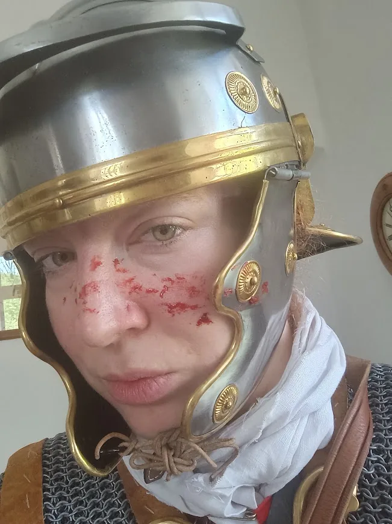
Ze starých bohů by jí byl nejspíš nejbližší Vulcanus, patron ohně a řemeslníků. Blízká je jí schopnost udělat z nápadu skutečnou věc, práce rukama i projekty, u kterých člověk na začátku ještě úplně netuší, kam ho zavedou.
„Aut viam inveniam aut faciam.“